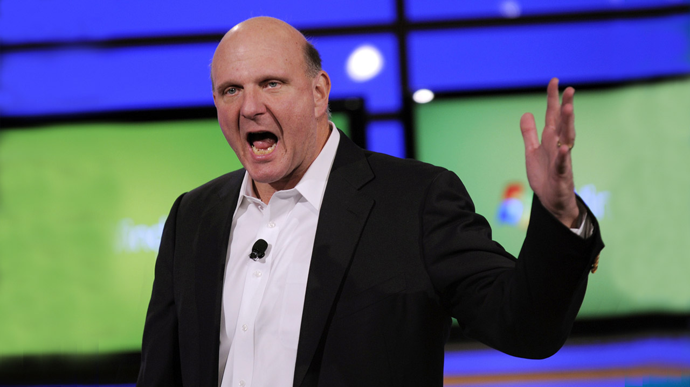

Steve Ballmer to retire as Microsoft CEO
Microsoft has just announced that CEO Steve Ballmer will retire within the next 12 months.
He will step down from his post as soon as the process of choosing his successor has been completed. Ballmer has written an open email to the Microsoft team explaining the decision and the strategy for "moving forward." He had this to say in the official Microsoft press release:
Ballmer's successor atop the Microsoft hierarchy will be selected by a special committee, which is chaired by John Thompson and will include company founder Bill Gates. International executive recruitment firm Heidrick & Struggles has been recruited to assist with the search, which will include consideration of both internal and external candidates.
Bill Gates has expressed his support for the outgoing chief executive officer in saying that Microsoft is "fortunate to have Steve in his role until the new CEO assumes these duties." Steve Ballmer has been a senior member of Microsoft's leadership team since joining the company in 1980 and was the man to take over after Gates stepped down from the CEO role in 2000. The years immediately following saw Microsoft continue its excellent growth and profitability, buoyed by the extraordinary success of Windows XP and the exponential growth of the computing industry.
Alas, the great success has been punctuated by major missteps as well. Windows Mobile proved incapable of extending Microsoft's desktop software dominance in the mobile realm, and Ballmer and company were forced into a painful reboot of their mobile efforts with the introduction of Windows Phone. That transition is still ongoing, as is the move toward a more touch-oriented Windows experience.
Although Ballmer remains bullish about Microsoft's achievements under his leadership, he does concede that the time has come to find a new boss to drive the company's transformation to its conclusion. Stock markets have reacted positively to today's news, with Microsoft's stock trading 7.5 percent higher.